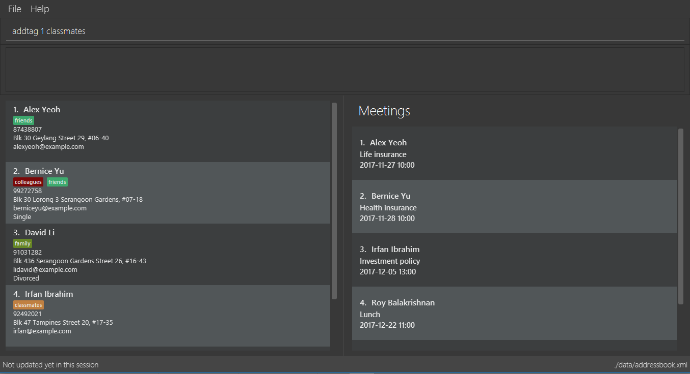

Project: ABC Business Contacts
ABC Business Contacts (ABC) is a desktop Business Contact Management application. The user interacts with it using a CLI, and it has a GUI created with JavaFX. It is written in Java.
Code contributed: [Functional code] [Test code]
Adding a tag to a person : addtag
Command Name: addtag
Shorthand Alias: at
Function: Adds a tag to an existing person at the specified INDEX in your ABC
Format: addtag INDEX TAG
| Only one tag can be added at a time |
| Special characters will not be accepted e.g !, @, #, … |
If you want to add a single tag to a contact in your ABC:
-
Locate the contact you want to add a tag to and take note of its index
-
Type in the index of the contact, and the tag you wish to add
>> addtag 1 classmates
(See Figure 4.8.1)

Figure 4.8.1 -
Press Enter and you should see that the contact selected has been modified
(See Figure 4.8.2)
Figure 4.8.2
You can also add tags to a contact in a filtered list:
-
>> find t/friends
>> addtag 2 friends
Adds thefriendstag to the 2nd person from the result of thefindcommand. -
>> find n/John
>> at 1 9pmclass
Adds the9pmclasstag to the 1st person from the result of thefindcommand.
Deleting a tag : deletetag
Command Name: deletetag
Shorthand Alias: dt
Function: Deletes the specified tag from a specified person or all persons in your ABC
Format: deletetag INDEX TAG
If you want to delete a single tag from a contact in your ABC:
-
Locate the contact you want to delete a tag from and take note of its index
-
Type in the index of the contact and the tag you wish to delete
>> deletetag 1 classmates
(See Figure 4.9.1)

Figure 4.9.1 -
Press Enter and you should see that the contact selected has been modified
(See Figure 4.9.2)

Figure 4.9.2
You can also delete tags from a contact in a filtered list:
-
>> find t/friends
>> deletetag 2 friends
Deletes thefriendstag from the 2nd person from the result of thefindcommand. -
>> find n/John
>> dt 1 9pmclass
Deletes the9pmclasstag from the 1st person from the result of thefindcommand.
If you would like to delete all instances of a particular tag from your ABC:
-
Type in
all, followed by the tag you wish to delete
>> deletetag all friends
(See Figure 4.9.3)

Figure 4.9.3 -
Press Enter and you should see that this tag has been deleted from all contacts
(See Figure 4.9.4)

Figure 4.9.4
End of Extract
Justification
Users cannot add and delete tags easily using the edit function, as this resets all tag attached to the person. As such, a convenient way to add and delete tags would be useful for many users.
Adding/Removing a tag
Mechanism
Adding or removing a tag is facilitated by AddTagCommand and DeleteTagCommand, which are subclasses of UndoableCommand. These commands work by changing the value of the Tag objects associated with the contact.
These commands take in an integer and a string as arguments. The command is first parsed in AddressBookParser to identify it as the appropriate command. It will then be parsed by AddTagCommandParser or DeleteTagCommandParser, to parse the index, which was the integer argument, and the Tag, which was represented by the string argument. Invalid indexes and tags will be handled by throwing an exception. This is how AddTagCommandParser is implemented:
public class AddTagCommandParser implements Parser<AddTagCommand> {
public AddTagCommand parse(String args) throws ParseException {
try {
// ... parse `Index` and `Tag` and pass it to `AddTagCommand` ...
} catch (IllegalValueException ive) {
// ... throw an exception ...
}
}
}To update the Tag objects associated with a Person, the set of Tag objects belonging to that Person is copied to a new set. The new data is then modified, then copied into a newly created Person instance. This is implemented as follows:
public class AddTagCommand extends UndoableCommand {
// ... variables, constructor, other methods ...
private final Tag newTag;
@Override
public CommandResult executeUndoableCommand() throws CommandException {
// ... fetch personToEdit ...
Set<Tag> oldTags = new HashSet<Tag>(personToEdit.getTags());
// ... check if tag is duplicated ...
Person editedPerson = new Person(personToEdit);
oldTags.add(newTag);
editedPerson.setTags(oldTags);
// ... try to replace personToEdit with editedPerson ...
}
}The diagram below (Figure 3.3.1) shows how AddTagCommand works.

Figure 3.3.1 : AddTag Command Sequence Diagram
RemoveTagCommand works in a similar way. Note that AddTagCommand will throw an exception if the Tag already exists for the Person selected. DeleteTagCommand throws an exception if the Tag is not found on the Person.
Design Considerations
Aspect: Changing the Tag objects of the selected Person
Alternative 1 (current choice): Copy set of Tag objects to a newly created set and modify the newly created set, then create a copy of the selected Person instance and replace its set of Tag objects
Pros: Ensures that the original value will be unchanged, which is important in the event that updating the Person instance fails in a later stage.
Cons: Additional memory required to create a new Person instance.
Alternative 2: Edit the Tag set directly
Pros: No need to instantiate new Person instance. Easy to implement.
Cons: Problematic implementation and bad coding practice. Modifying the original values directly can cause problems if updating the Person instance fails in a later stage.
End of Extract
Adding a meeting to a person : addmeeting
Command Name: addmeeting
Shorthand Alias: am
Function: Adds a meeting to a specified person in your ABC
Format: addmeeting MEETING_NAME/MEETING_TIME
MEETING_TIME must be in the format YYYY-MM-DD HH:MM
|
If you want to add a meeting to a contact in your ABC:
-
Locate the contact you want to add a meeting to and take note of its index
-
Type in the index of the contact, the name of the meeting and the time of the meeting you wish to add
>> addmeeting 1 class lunch/2017-12-20 12:00
(See Figure 4.10.1)
Figure 4.10.1 -
Press Enter and you should see that the contact that you selected has been modified
(See Figure 4.10.2)

Figure 4.10.2
You can also add meetings to a contact in a filtered list:
-
>> find t/friends
>> addmeeting 2 breakfast/2017-12-15 10:00
Adds a meeting namedbreakfastat2017-12-15 10:00to the 2nd person from the result of thefindcommand.
Deleting a meeting : deletemeeting
Command Name: deletemeeting
Shorthand Alias: dm
Function: Deletes the specified meeting in the meeting list from your ABC
Format: deletemeeting INDEX
If you want to delete a meeting in your ABC:
-
Locate the meeting you want to delete and take note of its index
-
Type in the index of the meeting to be deleted
>> deletemeeting 1
(See Figure 4.11.1)
Figure 4.11.1 -
Press Enter and you should see that the selected meeting has been deleted
(See Figure 4.11.2)

Figure 4.11.2
You can also delete a contact in a filtered list:
-
>> list
>> deletemeeting 2
Deletes the 2nd meeting in ABC. -
>> find n/Betsy
>> deletemeeting 1
Deletes the 1st meeting from the result of thefindcommand. -
find t/friends
>> dm 4
Deletes the 4th meeting from the result of thefindcommand.
End of Extract
Justification
Users frequently need to arrange meetings. This allows them to add meetings to specific people. They are also able to delete the meeting if it has been cancelled or has already passed.
Sorting contact list: sort
Command Name: sort
Shorthand Alias: s
Function: Sorts the contact list in alphabetical order by a given FIELD
Format: sort FIELD
Only one FIELD (NAME, PHONE, ADDRESS, EMAIL, TAG, MEETING) can be used at a time
|
For fields with multiple entries (TAG, MEETING), contacts will be sorted based on the entry that comes first alphabetically
|
If you would like to sort your contact list:
-
Type in the
FIELDto sort your contact list by
>> sort name
(See Figure 4.5.1)
Figure 4.5.1 -
Press Enter and your contact list will be sorted
(See Figure 4.5.2)
Figure 4.5.2
Here are some other ways to sort your contact list:
-
>> sort phone
Sorts the contact list by phone number. -
>> s tag
Sorts the contact list by tag. -
>> sort meeting
Sorts the contact list by meeting time.
End of Extract
Justification
As a user with many contacts, it can be difficult to find someone in your ABC. As such, the sort command allows users to arrange their contact in the way that is most convenient for them, whether it be name, phone, address, or even meeting time.
Enhancement Proposed: Automatic checking of date
ABC should be able to automatically delete meetings once the date has passed. The meetings should also be colour coded based on how close it is to the time of the meeting, so that users can see immediately at a glance how soon their next meetings are.